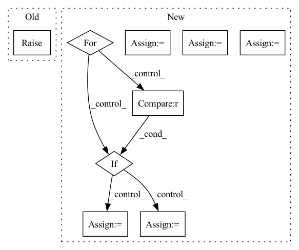

Pattern ID :9752
Before Change
(ids, dimensions, stream)
raise NotImplementedError
def transform(self, document):
After Change
// Convert all documents to embedding arrays, stream embeddings to disk to control memory usage
with tempfile.NamedTemporaryFile(mode="wb", suffix=".npy", delete=False) as output:
stream = output.name
batch = []
for document in documents:
batch.append(document)
if len(batch) == batchsize :
// Convert batch to embeddings
uids, dimensions = self.batch(batch, output)
ids.extend(uids)
batches += 1
batch = []
// Final batch
if batch:
uids, dimensions = self.batch(batch, output)
ids.extend(uids)
batches += 1
return (ids, dimensions, batches, stream)
In pattern: SUPERPATTERN
Frequency: 3
Non-data size: 9
Instances Fragment ID: 35067605
Project Name: neuml/txtai
Commit Name: b8c29666de7f745b2de9765abe74c2e6f3cd55fd
Time: 2022-05-11
Author: 561939+davidmezzetti@users.noreply.github.com
File Name: src/python/txtai/vectors/base.py
M Class Name: Vectors
N Class Name: Vectors
M Method Name: index(3)
N Method Name: index(2)
M Parent Class:
N Parent Class:
M File Name: src/python/txtai/vectors/base.py
N File Name: src/python/txtai/vectors/base.py
M Start Line: 51
M End Line: 51
N Start Line: 55
N End Line: 91
Before Change
def _run(self, epochs, train_dataset, eval_dataset, list_callback,
cb_params, print_steps):
Training process for non-data sinking mode.
raise NotImplementedError
def _run_ds_sink(self, train_dataset, eval_dataset, list_callback,
cb_params, print_steps, eval_steps):After Change
net_forward, self.optimizer.parameters, has_aux=True)
self.train_dataset = self.train_dataset.batch(self.batch_size)
total = self.train_dataset.get_dataset_size()
for epoch in range(0, self.epochs):
self.cur_epoch_nums += 1
self.cur_step_nums = 0
with tqdm(total=total) as t:
t.set_description("Epoch %i" % epoch)
loss_total = 0
for data in self.train_dataset.create_tuple_iterator():
if mode == "pynative" :
loss = self._run_step(data)
elif mode == "graph":
loss = ms_function(self._run_step)(data)
self.cur_step_nums += 1
loss_total += loss
t.set_postfix(loss=loss_total/self.cur_step_nums) Fragment ID: 35067539
Project Name: mindspore-lab/mindnlp
Commit Name: bd14f94512afa0075b31f2ccee1072676219ddcc
Time: 2022-07-28
Author: laixinyi@cqu.edu.cn
File Name: text/engine/trainer.py
M Class Name: Trainer
N Class Name: Trainer
M Method Name: _run(2)
N Method Name: _run(7)
M Parent Class:
N Parent Class:
M File Name: text/engine/trainer.py
N File Name: text/engine/trainer.py
M Start Line: 110
M End Line: 113
N Start Line: 132
N End Line: 174
Before Change
(ids, dimensions, stream)
raise NotImplementedError
def transform(self, document):
After Change
ids, dimensions, batches, stream = [], None, 0, None
// Convert all documents to embedding arrays, stream embeddings to disk to control memory usage
with tempfile.NamedTemporaryFile(mode="wb", suffix=".npy", delete=False) as output :
stream = output.name
batch = []
for document in documents:
batch.append(document)
if len(batch) == batchsize :
// Convert batch to embeddings
uids, dimensions = self.batch(batch, output)
ids.extend(uids)
batches += 1
batch = []
// Final batch
if batch:
uids, dimensions = self.batch(batch, output)
ids.extend(uids)
batches += 1
return (ids, dimensions, batches, stream)
Fragment ID: 35067615
Project Name: neuml/txtai
Commit Name: b8c29666de7f745b2de9765abe74c2e6f3cd55fd
Time: 2022-05-11
Author: 561939+davidmezzetti@users.noreply.github.com
File Name: src/python/txtai/vectors/base.py
M Class Name: Vectors
N Class Name: Vectors
M Method Name: index(3)
N Method Name: index(2)
M Parent Class:
N Parent Class:
M File Name: src/python/txtai/vectors/base.py
N File Name: src/python/txtai/vectors/base.py
M Start Line: 51
M End Line: 51
N Start Line: 55
N End Line: 91